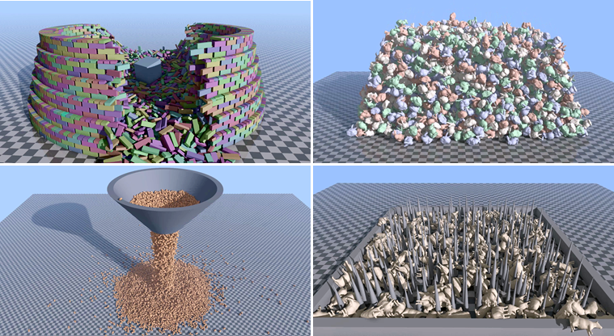
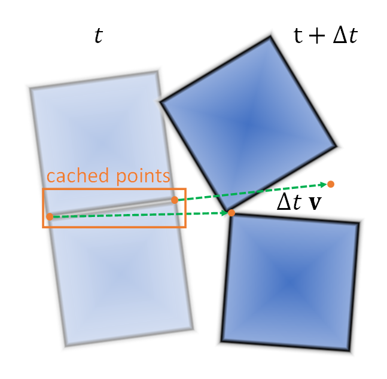
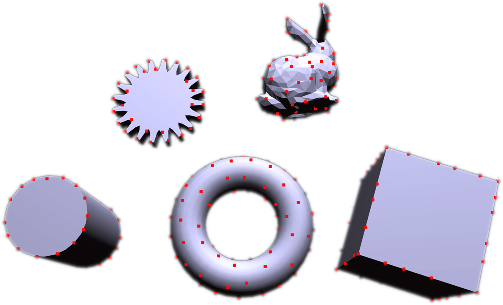
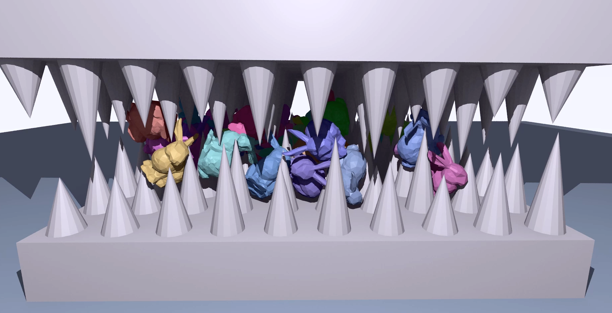
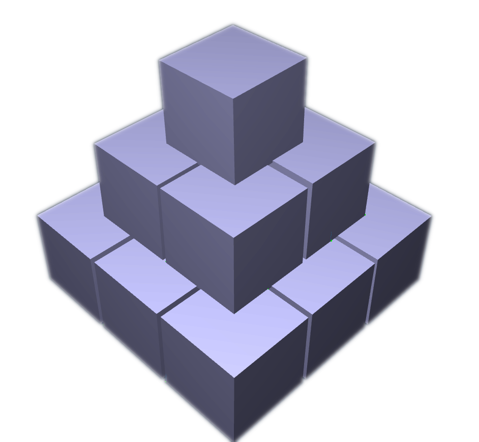
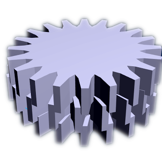
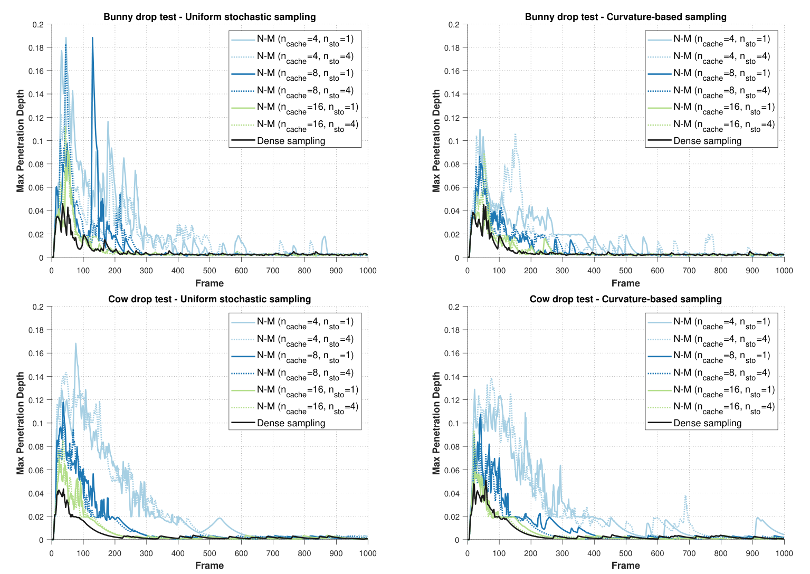
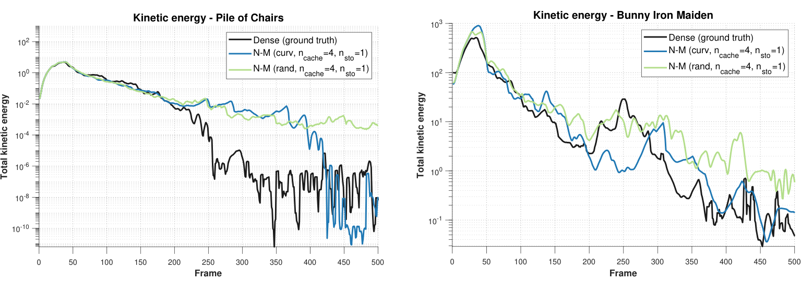
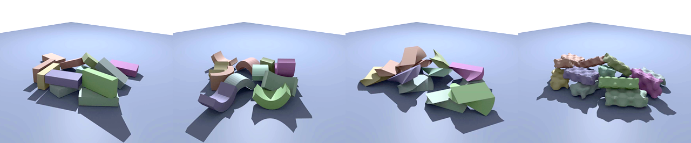
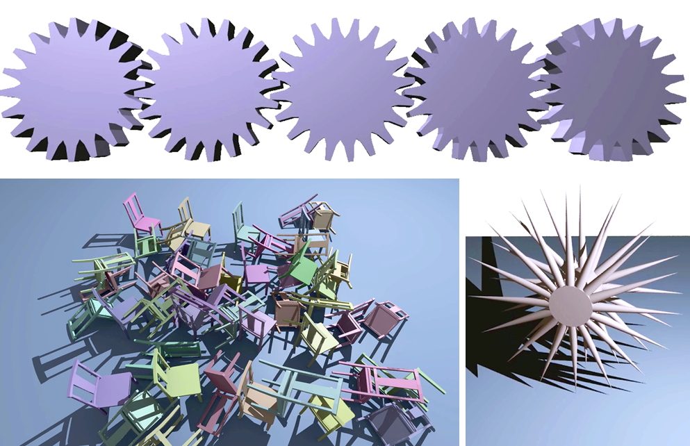

Abstract
This paper introduces a robust collision detection framework for SDF-encoded geometry, which has seen widespread adoption as a geometric representation in computer graphics. Our approach is designed to satisfy the competing requirements of numerical stability and computational efficiency of interactive and real-time applications. Our collision management strategy pairs temporal coherence caching with curvature-guided importance sampling. This scheme reliably forms sparse, stable contact manifolds, even for complex non-convex geometries. Quantitative evaluations against existing baselines demonstrate significant improvements in both runtime performance and simulation stability. While compatible with a range of numerical backends, our framework demonstrates how specific solver choices, such as derivative-free optimizers, yield additional gains in speed and convergence stability. Furthermore, the algorithm is highly parallelizable and well-suited for GPU architectures, scaling effectively to complex environments containing thousands of rigid bodies while maintaining real-time frame rates. Our proposed method is validated through comparisons on complex simulation scenes and ablation studies examining the influence of various optimizers and sampling strategies.
Video
Live Demo
The demo is the C++ implementation from our repository, compiled to WebAssembly with WebGL2. It runs Algorithm 1 on the CPU of your browser, so every parameter of the method can be changed while the simulation runs: the optimizer (Nelder–Mead, the ellipsoid method or stochastic gradient descent), the number of cached and random samples, curvature sampling, the softmax smoothing and the repulsion. You can also drop shapes into the scene or import your own OBJ file, which is baked into a voxel SDF in the browser.
Turn on Cached Contacts and Random Contacts to see the contact points: green points are warm started from the temporal cache, orange points come from new stochastic samples, and red lines show the contact normals. Seeds shows the high curvature seed points of each shape.
How It Works
We treat SDF-SDF collision detection as an optimization problem: the points where two bodies overlap are the points where both signed distance fields are negative. For every pair of bodies whose bounding boxes overlap, we search for a small, well spread set of such points and turn them into contact constraints for the rigid body solver. Rather than densely sampling the overlap, which is expensive and produces redundant, ill-conditioned manifolds, each step only optimizes a handful of seed points.
The collision objective
Inside both bodies, \(\max(\phi_A, \phi_B)\) is negative, and its minimum is the point of deepest intersection (Eq. 1). Its gradient jumps where the two fields are equal, so we minimize a smooth upper bound instead, a square root based “softmax” (Eq. 2), and add a repulsion term that pushes each new point away from the points already found (Eq. 3):
The repulsion spreads the manifold over the whole contact region instead of clustering it at a single deepest point, which is what keeps stacks and resting contact stable. Explore the objective below: drag the boxes, change the smoothing and the repulsion, place cached points, and click anywhere to watch an optimizer minimize \(g\) from that seed.
Contact data
Once the optimizer converges to \(\mathbf{x}^*\), the point is a contact if it lies inside both bodies. The penetration depth and normal come from the more deeply penetrating field, with the normal of \(B\) negated so that \(\mathbf{n}\) always points from \(A\) towards \(B\) (Eq. 5):
Temporal caching
Contacts change little from one step to the next, so each pair keeps a cache of its \(n_\text{cache}\) best points. At the start of a step, the cached points are moved with the average velocity of the two bodies (only the moving one if the other is static) and used as seeds, which makes the optimizer converge in a few iterations and keeps the manifold from chattering (Eq. 6):
After optimizing, points that converged within \(\tau\) of an earlier point are removed, the rest are sorted by \(g\) and the best \(n_\text{cache}\) become the cache of the next step. Seeds that improve on the cache survive, which gives the manifold an evolutionary refinement over time.

Curvature-guided importance sampling
Caching alone cannot discover new contact regions, so every step also optimizes \(n_\text{rand}\) stochastic samples (and more when the cache is not yet full). In challenging contact, collision points tend to lie in regions of high curvature, so we precompute seed points on the surface of each shape where the magnitude of the Laplacian of the SDF exceeds \(\kappa\), approximated with finite differences of the gradient (Eq. 7):
At run time, a stochastic sample is a random seed point of either body that lies inside the overlap of their bounding boxes. With models normalized to a unit cube we use \(\kappa = 4\) and \(\delta = 0.001\).

Optimizers
The framework works with any minimizer of \(g\). We compare three: the derivative-free Nelder–Mead simplex method, whose simplex adapts to the local shape of the intersection and is the most robust choice for non-convex and distorted fields; the ellipsoid method, which converges quickly when the overlap is convex; and stochastic gradient descent, which is simple but prone to stalling in the local minima of non-convex intersections. All three search the overlap \(V\) of the bounding boxes and stop when the iterates move less than \(\tau\).
Results



Run-time performance
Collision detection time per step \(t_\text{coll}\) of the GPU implementation, with 50 iterations and \(\tau = 0.01\) (Table 1). Nelder–Mead converges well on arbitrary geometry, the ellipsoid method is fastest on convex shapes, and SGD is consistently the slowest.
| Scene | # bodies | Nelder–Mead | Ellipsoid | SGD |
|---|---|---|---|---|
| Spikes (cows) | 583 | 0.7 ms | 1.0 ms | 1.3 ms |
| Funnel (cylinders) | 16000 | 2.2 ms | 1.8 ms | 7.1 ms |
| Funnel (horses) | 16000 | 20.0 ms | 20.2 ms | 42.3 ms |
| Colosseum | 8819 | 0.5 ms | 0.4 ms | 1.9 ms |
| Bunnies | 4314 | 1.8 ms | 2.4 ms | 5.1 ms |
Accuracy and stability


Operator-distorted fields


Code
The repository contains a minimal C++ implementation of the method with a sequential impulse rigid body solver, written to be read alongside the paper. It builds natively with CMake and for the web with Emscripten, using SDL2 and Dear ImGui.
collide.cppAlgorithm 1, the objective (Eqs. 2–3), contact data (Eq. 5), cache advection (Eq. 6) and stochastic sampling
optimize.cppNelder–Mead, the ellipsoid method and stochastic gradient descent
shapes.cppAnalytical SDFs, distortion operators (Sec. 4.5) and curvature seed points (Eq. 7)
voxel.cppVoxel SDFs baked from triangle meshes (Sec. 3.6)
solver.cppBroad phase and the velocity level contact solver
git clone --recurse-submodules https://github.com/savant117/sdf-dcd-demo cd sdf-dcd-demo cmake -B build cmake --build build --config Release
See the README for the web build, the controls and notes on the implementation.
Citation
@article{giles2026sdf,
title = {Real-Time Collision Handling for Signed Distance Fields via
Caching and Importance Sampling},
author = {Giles, Chris and Andrews, Sheldon},
journal = {Computer Graphics Forum},
volume = {45},
number = {7},
year = {2026},
note = {Pacific Graphics 2026}
}